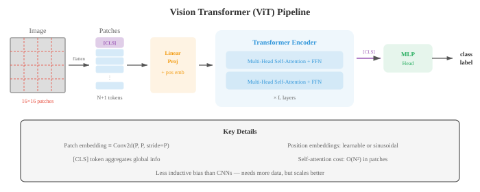
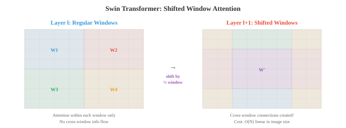
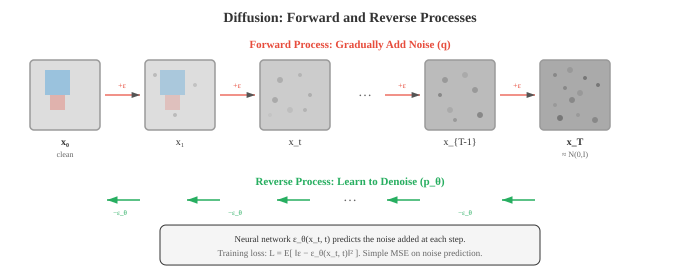

Vision Transformers and Generation¶
Vision transformers apply self-attention to image patches, challenging CNN dominance with data-driven spatial learning. This file covers ViT, DeiT, Swin Transformer, image generation with GANs (StyleGAN), VAEs, and diffusion models (DDPM, Stable Diffusion), plus super-resolution and neural style transfer.
-
CNNs (file 02) build in strong spatial inductive biases: local connectivity, weight sharing, and translation equivariance. Vision Transformers (ViTs) ask a provocative question: what if we drop these biases entirely and let the model learn spatial structure from data, using only the attention mechanism from chapter 06?
-
The Vision Transformer (ViT) (Dosovitskiy et al., 2021) applies the standard Transformer encoder directly to images. The key idea is to treat an image as a sequence of patches, just as NLP treats text as a sequence of tokens.
-
The process works as follows:
- Split the image (height \(H\), width \(W\), channels \(C\)) into a grid of non-overlapping patches of size \(P \times P\). This produces \(N = HW / P^2\) patches.
- Flatten each patch into a vector of length \(P^2 \cdot C\) and project it to the model dimension \(D\) via a learned linear embedding (a single matrix multiply, chapter 02).
- Prepend a learnable [CLS] token embedding (analogous to BERT's [CLS], chapter 07). This token attends to all patches and its final representation is used for classification.
- Add position embeddings (one learnable vector per position) to provide spatial information, since attention is permutation-equivariant.
- Pass the sequence of \((N + 1)\) token embeddings through a standard Transformer encoder (multi-head self-attention + FFN, chapter 06).
- The [CLS] token's final representation is passed through a classification head (a small MLP).

-
The patch embedding is equivalent to a convolution with kernel size \(P\) and stride \(P\) (non-overlapping). ViT literally converts the 2D image into a 1D sequence, then processes it with the same architecture used for language.
-
ViT has less inductive bias than CNNs: it does not enforce local connectivity or translation equivariance. This means it needs more training data to learn spatial structure from scratch. On small datasets, CNNs outperform ViT. But when trained on very large datasets (JFT-300M, 300 million images), ViT matches or exceeds the best CNNs, suggesting that the inductive biases of CNNs are helpful for data efficiency but not necessary for ultimate performance.
-
ViT self-attention is \(O(N^2)\) in the number of patches. For a 224x224 image with 16x16 patches, \(N = 196\), which is manageable. But for higher-resolution images or smaller patches, the quadratic cost becomes prohibitive.
-
DeiT (Data-efficient Image Transformer, Touvron et al., 2021) showed that ViT can be trained effectively on ImageNet alone (without the massive JFT dataset) using strong data augmentation, regularisation (stochastic depth, label smoothing, dropout), and knowledge distillation: a pre-trained CNN teacher provides soft labels that the ViT student learns to match. DeiT added a distillation token alongside the [CLS] token, trained to predict the teacher's output.
-
Swin Transformer (Liu et al., 2021) addresses ViT's two main limitations: its quadratic cost with image size and its lack of hierarchical feature maps (which detection and segmentation need).
-
Swin introduces shifted windows: instead of global self-attention over all patches, attention is computed within local windows (e.g., 7x7 patches). This makes the cost linear in image size: \(O(N)\) rather than \(O(N^2)\). But local windows alone would prevent information flow between regions.
-
Window shifting solves this: in alternating layers, the window partition is shifted by half the window size. This creates cross-window connections, allowing information to flow between all parts of the image across layers without the cost of global attention.

-
Swin also builds a hierarchical representation by merging patches across stages. After each stage, neighbouring 2x2 patches are concatenated and projected to double the channel dimension and halve the spatial resolution. This produces multi-scale feature maps analogous to those in CNNs and FPN (file 03), making Swin directly compatible with detection heads like Faster R-CNN and segmentation heads like U-Net.
-
PVT (Pyramid Vision Transformer) takes a similar hierarchical approach with spatial-reduction attention: at each stage, the keys and values are spatially downsampled before computing attention, reducing the quadratic cost while maintaining the global receptive field.
-
Self-supervised visual learning trains representations from unlabelled images. Labels are expensive to collect, but images are abundant. The goal is to learn features that transfer well to downstream tasks without any human annotation.
-
Contrastive learning trains the model to recognise that two augmented views of the same image (a "positive pair") should have similar representations, while views of different images ("negative pairs") should have dissimilar representations.
-
SimCLR (Chen et al., 2020) creates two augmented views of each image in a batch, encodes both with a shared backbone + projection head, and applies the NT-Xent loss (normalised temperature-scaled cross-entropy):
-
where \(\text{sim}\) is cosine similarity (chapter 01) and \(\tau\) is a temperature parameter. The numerator pushes positive pairs together; the denominator pushes negative pairs apart. SimCLR requires large batch sizes (4,096+) to provide enough negatives.
-
MoCo (Momentum Contrast, He et al., 2020) solves the large-batch requirement by maintaining a momentum-updated queue of negative embeddings. The query encoder is updated by gradient descent; the key encoder is updated as an exponential moving average (EMA, chapter 04) of the query encoder: \(\theta_k \leftarrow m \theta_k + (1 - m) \theta_q\), with \(m = 0.999\). The queue stores recent key embeddings, providing a large and consistent set of negatives without needing huge batches.
-
BYOL (Bootstrap Your Own Latent, Grill et al., 2020) eliminates negative pairs entirely. It uses two networks: an "online" network and a "target" network (EMA of the online). The online network predicts the target network's representation of a different augmented view. Without negatives, BYOL avoids the collapse problem (where the model outputs the same vector for everything) through the asymmetry of the predictor head and the EMA target.
-
DINO (Self-Distillation with No Labels, Caron et al., 2021) applies self-distillation to ViT. A student network predicts the output of a teacher network (EMA of the student) across different augmented views. The teacher uses larger crops; the student uses smaller crops. DINO produces features that contain explicit information about the scene layout: the self-attention maps of DINO-trained ViTs naturally segment objects without any segmentation supervision.
-
Masked image modelling is the visual analogue of BERT's masked language modelling (chapter 07). A large fraction of input patches is masked, and the model learns to reconstruct them.
-
MAE (Masked Autoencoders, He et al., 2022) masks 75% of patches and trains a ViT encoder-decoder to reconstruct the missing pixel values. Only the unmasked patches are processed by the encoder (saving 4x computation during pre-training), and the lightweight decoder reconstructs the full image from the encoded visible patches plus learnable mask tokens.
-
BEiT (BERT Pre-training of Image Transformers, Bao et al., 2022) masks patches and predicts discrete visual tokens (obtained from a pre-trained dVAE tokeniser) rather than raw pixels. This parallels BERT's prediction of discrete word tokens and avoids the low-level detail of pixel reconstruction.
-
Image generation aims to produce new, realistic images that do not exist in the training set. The core challenge is modelling the high-dimensional probability distribution of natural images.
-
Generative Adversarial Networks (GANs) (Goodfellow et al., 2014) use two competing networks: a generator \(G\) that creates fake images from random noise, and a discriminator \(D\) that tries to distinguish real images from fakes. They are trained adversarially: \(G\) tries to fool \(D\), and \(D\) tries to catch \(G\).
-
The generator takes a random latent vector \(z\) (sampled from a simple distribution like a Gaussian) and maps it through a series of transposed convolutions to produce an image. The discriminator is a standard CNN classifier. At equilibrium, \(G\) produces images indistinguishable from real data, and \(D\) outputs 0.5 for all inputs.
-
Mode collapse is the main failure mode of GANs: the generator learns to produce only a few types of images that fool the discriminator, ignoring the diversity of the training data. The generator finds a small set of "safe" outputs rather than covering the full distribution.
-
Training tricks that stabilise GANs include: spectral normalisation (constraining the Lipschitz constant of the discriminator), progressive growing (training at low resolution first, then gradually increasing), feature matching (matching the statistics of intermediate discriminator features rather than the final output), and using Wasserstein distance instead of the original JS divergence objective.
-
StyleGAN (Karras et al., 2019) is the most influential GAN architecture for high-quality image synthesis. Its key innovation is the style-based generator: instead of feeding the latent vector \(z\) directly into the generator, it is first mapped through a mapping network (an 8-layer MLP) to produce a style vector \(w\). This style vector is injected into each layer of the generator via adaptive instance normalisation (AdaIN), which modulates the feature map statistics:
-
where \(y_s\) and \(y_b\) are the scale and bias derived from \(w\). Different layers control different aspects: early layers control coarse features (pose, face shape), middle layers control medium features (hair style, eyes), and late layers control fine details (freckles, hair texture). StyleGAN can generate photorealistic faces at 1024x1024 resolution.
-
Variational Autoencoders (VAEs) (chapter 06) provide an alternative generative approach. Unlike GANs, VAEs have a principled probabilistic framework with a clear training objective (ELBO). They tend to produce blurrier images than GANs but offer a smoother, more structured latent space. VAEs are the encoder-decoder pair used in latent diffusion models for compressing images to and from latent space.
-
Diffusion models have become the dominant paradigm for image generation, surpassing GANs in both quality and diversity. The idea is conceptually simple: gradually add noise to data until it becomes pure Gaussian noise (the forward process), then learn to reverse this process step by step (the reverse process).
-
The forward process adds Gaussian noise over \(T\) timesteps:
- where \(\beta_t\) is a noise schedule that increases over time. After enough steps, \(x_T\) is approximately pure Gaussian noise regardless of the original image \(x_0\). Using the reparametrisation trick (chapter 06) and setting \(\alpha_t = 1 - \beta_t\), \(\bar{\alpha}_t = \prod_{s=1}^{t} \alpha_s\), we can sample \(x_t\) directly from \(x_0\):
- The reverse process learns to denoise: starting from pure noise \(x_T\), the model predicts the noise \(\epsilon\) added at each step and subtracts it to recover \(x_{t-1}\). This is parametrised by a neural network \(\epsilon_\theta\) (typically a U-Net, from file 03), trained with a simple MSE loss:

-
DDPM (Denoising Diffusion Probabilistic Models, Ho et al., 2020) established this framework. Sampling requires iterating through all \(T\) steps (typically 1,000), which is slow. DDIM (Denoising Diffusion Implicit Models, Song et al., 2021) reformulates the sampling process as a deterministic mapping, allowing large step skips (e.g., 50 steps instead of 1,000) with minimal quality loss.
-
Score-based models (Song and Ermon, 2019) provide an alternative perspective. Instead of predicting the noise \(\epsilon\), the model estimates the score function \(\nabla_{x_t} \log p(x_t)\), the gradient of the log-probability with respect to the noisy image. This gradient points toward higher-probability (cleaner) regions of the data distribution. Sampling follows this gradient using Langevin dynamics. Score-based models and DDPM were unified in the framework of stochastic differential equations (SDEs): the forward process is an SDE that adds noise, and the reverse process is the time-reversed SDE.
-
Classifier-free guidance (Ho and Salimans, 2022) controls the tradeoff between sample quality and diversity. The model is trained both conditionally (with a text prompt or class label) and unconditionally (with the condition dropped randomly). At sampling time, the prediction is a weighted combination:
-
where \(c\) is the condition, \(\varnothing\) is the null condition, and \(s > 1\) is the guidance scale. Higher \(s\) produces images that match the condition more strongly but with less diversity. \(s = 1\) gives the unguided model; \(s = 7.5\) is a common default.
-
Latent diffusion (Rombach et al., 2022; Stable Diffusion) moves the diffusion process from pixel space to a learned latent space. A pre-trained VAE encoder compresses images to a lower-dimensional latent representation (typically 4x or 8x spatial downsampling), diffusion operates in this compressed space, and the VAE decoder reconstructs pixels from the denoised latent. This is dramatically more efficient: diffusing a 512x512 image in pixel space means processing a \(512 \times 512 \times 3\) tensor, but in latent space only a \(64 \times 64 \times 4\) tensor.
-
The denoising U-Net in latent diffusion receives the noisy latent, the timestep (encoded as a sinusoidal embedding, analogous to positional encoding in transformers), and a conditioning signal (text embedding from a frozen CLIP or T5 text encoder). The text condition enters via cross-attention layers within the U-Net: the text embeddings serve as keys and values, and the image features serve as queries. This lets the model attend to relevant parts of the text prompt at each spatial location.
-
Flow matching is an emerging alternative to diffusion that learns a direct transport path between noise and data, rather than the iterative denoising of DDPM.
-
A continuous normalising flow (CNF) defines a time-dependent velocity field \(v_\theta(x, t)\) that pushes samples from a simple distribution \(p_0\) (noise) to the data distribution \(p_1\) along smooth trajectories. The transformation follows an ordinary differential equation (ODE):
-
Starting from \(x_0 \sim \mathcal{N}(0, I)\), integrating the ODE forward to \(t = 1\) produces a sample from the data distribution. The velocity field is parametrised by a neural network and trained to match a target conditional flow.
-
Optimal transport (OT) flow matching (Lipman et al., 2023) uses straight-line paths between noise and data as the target flow: the conditional path from noise sample \(x_0\) to data sample \(x_1\) is simply \(x_t = (1 - t) x_0 + t x_1\), and the target velocity is \(v = x_1 - x_0\). The training loss becomes:
-
Rectified flows (Liu et al., 2022) iteratively straighten the learned flow paths. After an initial training pass, the model is used to generate (noise, data) pairs by simulating the ODE. These pairs, which are more closely aligned than random pairings, are used to retrain the model. Repeating this process produces increasingly straight paths, which can be traversed in fewer ODE steps (even a single step), enabling extremely fast generation.
-
Flow matching has several advantages over diffusion: the training objective is simpler (direct velocity regression, no noise schedule), the sampling ODE is smoother (requiring fewer integration steps), and the connection to optimal transport provides theoretical grounding. Stable Diffusion 3 and Flux use flow matching instead of traditional DDPM.
Coding Tasks (use CoLab or notebook)¶
-
Implement the ViT patch embedding from scratch. Split an image into patches, flatten them, project to the model dimension, add position embeddings, and prepend a [CLS] token.
import jax import jax.numpy as jnp import matplotlib.pyplot as plt def create_patch_embedding(image, patch_size, d_model, params): """Convert an image into a sequence of patch embeddings.""" H, W, C = image.shape n_patches_h = H // patch_size n_patches_w = W // patch_size n_patches = n_patches_h * n_patches_w # Extract patches patches = [] for i in range(n_patches_h): for j in range(n_patches_w): patch = image[i*patch_size:(i+1)*patch_size, j*patch_size:(j+1)*patch_size, :] patches.append(patch.ravel()) patches = jnp.stack(patches) # (N, P*P*C) # Linear projection to d_model embeddings = patches @ params['proj_w'] + params['proj_b'] # (N, d_model) # Prepend CLS token cls_token = params['cls_token'] # (1, d_model) embeddings = jnp.concatenate([cls_token, embeddings], axis=0) # (N+1, d_model) # Add position embeddings embeddings = embeddings + params['pos_embed'] # (N+1, d_model) return embeddings, patches # Setup H, W, C = 32, 32, 3 patch_size = 8 d_model = 64 n_patches = (H // patch_size) * (W // patch_size) # 16 key = jax.random.PRNGKey(42) keys = jax.random.split(key, 5) # Create a synthetic image with distinct quadrants image = jnp.zeros((H, W, C)) image = image.at[:16, :16, 0].set(1.0) # red top-left image = image.at[:16, 16:, 1].set(1.0) # green top-right image = image.at[16:, :16, 2].set(1.0) # blue bottom-left image = image.at[16:, 16:, :2].set(1.0) # yellow bottom-right params = { 'proj_w': jax.random.normal(keys[0], (patch_size**2 * C, d_model)) * 0.02, 'proj_b': jnp.zeros(d_model), 'cls_token': jax.random.normal(keys[1], (1, d_model)) * 0.02, 'pos_embed': jax.random.normal(keys[2], (n_patches + 1, d_model)) * 0.02, } embeddings, patches = create_patch_embedding(image, patch_size, d_model, params) print(f"Image shape: {image.shape}") print(f"Patch size: {patch_size}x{patch_size}") print(f"Number of patches: {n_patches}") print(f"Patch vector length: {patch_size**2 * C}") print(f"Embedding shape: {embeddings.shape} (CLS + {n_patches} patches)") # Visualise patches fig, axes = plt.subplots(2, 5, figsize=(14, 6)) axes[0, 0].imshow(image); axes[0, 0].set_title('Full Image'); axes[0, 0].axis('off') for idx in range(min(9, n_patches)): ax = axes[(idx+1) // 5, (idx+1) % 5] patch_img = patches[idx].reshape(patch_size, patch_size, C) ax.imshow(patch_img); ax.set_title(f'Patch {idx}'); ax.axis('off') plt.suptitle('ViT Patch Decomposition') plt.tight_layout(); plt.show() -
Implement a simple GAN training loop. Train a generator and discriminator on 2D data and visualise the generated distribution converging to the real distribution.
import jax import jax.numpy as jnp import matplotlib.pyplot as plt def generator(z, params): h = jnp.tanh(z @ params['g_w1'] + params['g_b1']) h = jnp.tanh(h @ params['g_w2'] + params['g_b2']) return h @ params['g_w3'] + params['g_b3'] def discriminator(x, params): h = jax.nn.leaky_relu(x @ params['d_w1'] + params['d_b1'], 0.2) h = jax.nn.leaky_relu(h @ params['d_w2'] + params['d_b2'], 0.2) return jax.nn.sigmoid(h @ params['d_w3'] + params['d_b3']) def init_params(key): keys = jax.random.split(key, 6) z_dim, h_dim, data_dim = 2, 32, 2 scale = 0.1 return { 'g_w1': jax.random.normal(keys[0], (z_dim, h_dim)) * scale, 'g_b1': jnp.zeros(h_dim), 'g_w2': jax.random.normal(keys[1], (h_dim, h_dim)) * scale, 'g_b2': jnp.zeros(h_dim), 'g_w3': jax.random.normal(keys[2], (h_dim, data_dim)) * scale, 'g_b3': jnp.zeros(data_dim), 'd_w1': jax.random.normal(keys[3], (data_dim, h_dim)) * scale, 'd_b1': jnp.zeros(h_dim), 'd_w2': jax.random.normal(keys[4], (h_dim, h_dim)) * scale, 'd_b2': jnp.zeros(h_dim), 'd_w3': jax.random.normal(keys[5], (h_dim, 1)) * scale, 'd_b3': jnp.zeros(1), } def d_loss(params, real_data, fake_data): real_score = discriminator(real_data, params) fake_score = discriminator(fake_data, params) return -jnp.mean(jnp.log(real_score + 1e-7) + jnp.log(1 - fake_score + 1e-7)) def g_loss(params, fake_data): fake_score = discriminator(fake_data, params) return -jnp.mean(jnp.log(fake_score + 1e-7)) # Real data: ring distribution key = jax.random.PRNGKey(42) theta = jax.random.uniform(key, (512,)) * 2 * jnp.pi real_data = jnp.stack([jnp.cos(theta), jnp.sin(theta)], axis=1) real_data = real_data + jax.random.normal(key, real_data.shape) * 0.05 params = init_params(jax.random.PRNGKey(0)) d_grad = jax.grad(d_loss) g_grad = jax.grad(g_loss) lr = 0.001 snapshots = [] for step in range(3000): key, k1 = jax.random.split(key) z = jax.random.normal(k1, (512, 2)) fake_data = generator(z, params) # Update discriminator grads = d_grad(params, real_data, fake_data) for k in ['d_w1', 'd_b1', 'd_w2', 'd_b2', 'd_w3', 'd_b3']: params[k] = params[k] - lr * grads[k] # Update generator fake_data = generator(z, params) grads = g_grad(params, fake_data) for k in ['g_w1', 'g_b1', 'g_w2', 'g_b2', 'g_w3', 'g_b3']: params[k] = params[k] - lr * grads[k] if step in [0, 500, 1500, 2999]: snapshots.append((step, fake_data.copy())) fig, axes = plt.subplots(1, 4, figsize=(16, 4)) for ax, (step, fake) in zip(axes, snapshots): ax.scatter(real_data[:, 0], real_data[:, 1], s=5, alpha=0.3, c='#3498db', label='Real') ax.scatter(fake[:, 0], fake[:, 1], s=5, alpha=0.3, c='#e74c3c', label='Generated') ax.set_title(f'Step {step}'); ax.set_xlim(-2, 2); ax.set_ylim(-2, 2) ax.set_aspect('equal'); ax.legend(markerscale=3) plt.suptitle('GAN Training: Generator Learns the Ring Distribution') plt.tight_layout(); plt.show() -
Implement the diffusion forward process: add noise to an image at increasing timesteps and visualise the progressive corruption. Then implement a single denoising step.
import jax import jax.numpy as jnp import matplotlib.pyplot as plt def noise_schedule(T, beta_start=0.0001, beta_end=0.02): """Linear noise schedule.""" betas = jnp.linspace(beta_start, beta_end, T) alphas = 1.0 - betas alpha_bars = jnp.cumprod(alphas) return betas, alphas, alpha_bars def forward_diffusion(x0, t, alpha_bars, key): """Add noise to x0 at timestep t.""" alpha_bar_t = alpha_bars[t] noise = jax.random.normal(key, x0.shape) xt = jnp.sqrt(alpha_bar_t) * x0 + jnp.sqrt(1 - alpha_bar_t) * noise return xt, noise # Create a simple 2D "image" (checkerboard) img = jnp.zeros((32, 32)) for i in range(4): for j in range(4): if (i + j) % 2 == 0: img = img.at[i*8:(i+1)*8, j*8:(j+1)*8].set(1.0) T = 1000 betas, alphas, alpha_bars = noise_schedule(T) # Visualise forward process timesteps = [0, 50, 200, 500, 999] key = jax.random.PRNGKey(42) fig, axes = plt.subplots(1, len(timesteps), figsize=(16, 3.5)) for ax, t in zip(axes, timesteps): key, subkey = jax.random.split(key) xt, noise = forward_diffusion(img, t, alpha_bars, subkey) ax.imshow(xt, cmap='gray', vmin=-2, vmax=2) ax.set_title(f't={t}\n$\\bar{{\\alpha}}$={alpha_bars[t]:.3f}') ax.axis('off') plt.suptitle('Diffusion Forward Process: Progressive Noise Addition') plt.tight_layout(); plt.show() # Simple denoising: train a tiny network to predict noise at t=200 t_denoise = 200 key, k1 = jax.random.split(key) xt, true_noise = forward_diffusion(img, t_denoise, alpha_bars, k1) # Tiny "denoiser": just learn a constant noise estimate (for illustration) noise_estimate = jnp.zeros_like(img) lr = 0.01 for step in range(100): residual = noise_estimate - true_noise noise_estimate = noise_estimate - lr * residual # Reverse one step alpha_bar_t = alpha_bars[t_denoise] x_denoised = (xt - jnp.sqrt(1 - alpha_bar_t) * noise_estimate) / jnp.sqrt(alpha_bar_t) fig, axes = plt.subplots(1, 3, figsize=(12, 4)) axes[0].imshow(img, cmap='gray'); axes[0].set_title('Original $x_0$'); axes[0].axis('off') axes[1].imshow(xt, cmap='gray', vmin=-2, vmax=2) axes[1].set_title(f'Noisy $x_{{200}}$'); axes[1].axis('off') axes[2].imshow(x_denoised, cmap='gray') axes[2].set_title('Denoised (one step)'); axes[2].axis('off') plt.tight_layout(); plt.show() mse = jnp.mean((x_denoised - img)**2) print(f"Denoising MSE: {mse:.4f}")